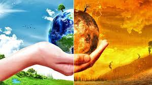

Nos encontramos en un momento decisivo para afrontar con éxito el mayor desafío de nuestro tiempo: el cambio climático. Cada día, en diferentes puntos de la geografía mundial, el planeta nos manda mensajes sobre las enormes transformaciones que está sufriendo: desde cambiantes pautas meteorológicas que amenazan la producción de alimentos; hasta el aumento del nivel del mar que incrementa el riesgo de inundaciones catastróficas. Los efectos del cambio climático nos afectan a todos. Si no se toman medidas drásticas desde ya, será mucho más difícil y costoso adaptarse a sus efectos en el futuro.
Los gases de efecto invernadero (GEI) se producen de manera natural y son esenciales para la supervivencia de los seres humanos y de millones de otros seres vivos ya que, al impedir que parte del calor del sol se propague hacia el espacio, hacen la Tierra habitable. Después de más de un siglo y medio de industrialización, deforestación y agricultura a gran escala, las cantidades de gases de efecto invernadero en la atmósfera se han incrementado en niveles nunca antes vistos en tres millones de años. A medida que la población, las economías y el nivel de vida – con el asociado incremento del consumo— crecen, también lo hace el nivel acumulado de emisiones de ese tipo de gases.
Existen tres hechos en que los científicos inciden y que son de enorme utilidad para entender mejor la raíz y la escala del problema:
a) la concentración de GEI en la atmósfera terrestre está directamente relacionada con la temperatura media mundial de la Tierra;
b) esta concentración ha ido aumentando progresivamente desde la Revolución Industrial y, con ella, la temperatura del planeta;
c) el GEI más abundante, alrededor de dos tercios de todos los tipos de GEI, es el dióxido de carbono (CO2) que resulta de la quema de combustibles fósiles.
Este grupo (IPPC, como se conoce en sus siglas en inglés) fue creado por la Organización Meteorológica Mundial (OMM) y la ONU Medio Ambiente con el objetivo de proporcionar una fuente objetiva de información científica. En 2014 el IPCC proporcionó más claridad sobre el papel de la actividad humana en el cambio climático cuando publicó su Quinto Informe de Evaluación. Su conclusión fue categórica: el cambio climático es real y las actividades humanas son sus principales causantes.
Este Informe proporciona una evaluación exhaustiva del aumento del nivel del mar y sus causas a lo largo de las últimas décadas. También calcula las emisiones acumuladas de CO2 desde la época preindustrial y ofrece una estimación sobre la cantidad máxima de CO2 – cuya mitad del límite ya se alcanzó en 2011 - si se quiere restringir el calentamiento a menos de 2˚C. Otras de las conclusiones de este estudio son las siguientes: de 1880 a 2012 la temperatura media mundial aumentó 0,85 °C; los océanos se han calentado, las cantidades de nieve y hielo han disminuido y el nivel del mar ha subido. De 1901 a 2010 el nivel medio mundial del mar ascendió 19 cm, ya que los océanos se expandieron debido al hielo derretido por el calentamiento. La extensión del hielo marino en el Ártico ha disminuido en cada década desde 1979, con una pérdida de 1,07 × 106 km2 de hielo cada diez años; debido a la concentración actual y a las continuas emisiones de gases de efecto invernadero, es probable que el final de este siglo la temperatura media mundial continúe creciendo por encima del nivel preindustrial. Como resultado, los océanos se calentarán y el deshielo continuará. Se estima que el aumento del nivel medio del mar será de entre 24 y 30 centímetros para 2065 y de 40 a 63 centímetros para 2100 en relación al periodo de referencia de 1986-2005. La mayoría de los efectos del cambio climático persistirán durante muchos siglos, incluso si se detienen las emisiones Existen pruebas alarmantes de que ya se pueden haber alcanzado - o sobrepasado – varios puntos de inflexión que darían lugar a cambios irreversibles en importantes ecosistemas, así como también en el sistema climático del planeta. Ecosistemas tan diversos como la selva amazónica y la tundra antártica pueden estar llegando a umbrales de cambio drástico debido a su calentamiento y a la pérdida de humedad. Los glaciares de montaña también están retrocediendo de manera muy preocupante. Además, los efectos producidos por el menor abastecimiento de agua en los meses secos tendrán repercusiones a muy largo plazo en estos ecosistemas.
En 2018 el IPCC publicó un informe especial sobre los impactos del calentamiento global a 1,5°C. Una de las principales conclusiones de este informe destaca que limitar el calentamiento global a este nivel requerirá cambios rápidos, de gran alcance y sin precedentes en todos los aspectos de la sociedad. Este informe subraya que la limitación del calentamiento global a 1.5ºC, comparado con 2ºC, debe de ir unida al compromiso de construir una sociedad más sostenible y equitativa. Mientras que estimaciones previas se enfocaban en determinar el daño que se ocasionaría si la temperatura media llegara a los 2°C, este informe indica que gran parte del impacto del cambio climático ya se produciría con 1,5°C de aumento. Además, el informe destaca una serie de daños ocasionados por el cambio climático que podrían evitarse si el límite de calentamiento global se estableciera en 1,5ºC en lugar de 2ºC, o más. Por ejemplo, para 2100 el aumento del nivel del mar a nivel global sería 10 cm más bajo con un calentamiento global de 1,5°C. Las probabilidades de tener un Océano Ártico sin hielo durante el verano disminuirán a una vez por siglo, en lugar de una vez por década, con el máximo en 1,5ºC si el límite se establece en los 2ºC. Los arrecifes de coral disminuirían entre un 70 y 90% con un calentamiento global de 1,5 °C mientras que con 2ºC se perderían prácticamente todos (el 99%). Este informe también indica que limitar el calentamiento global a 1,5°C requeriría transiciones "rápidas y de gran calado" en la tierra, la energía, la industria, los edificios, el transporte y las ciudades. Las emisiones netas mundiales de CO2 de origen humano tendrían que reducirse en un 45% para 2030 con respecto a los niveles de 2010, y seguir disminuyendo hasta alcanzar el "cero neto" aproximadamente en 2050.
Mas informacion click aqui